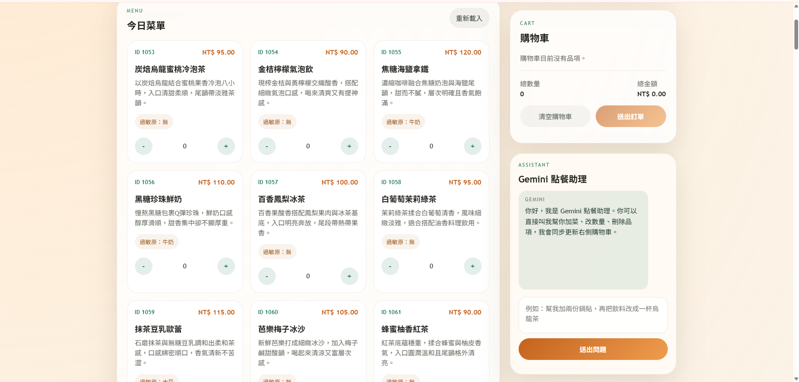
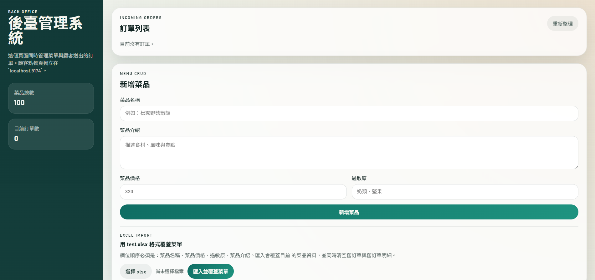

Slide 1
智慧點餐系統
安裝與內部邏輯教學
- 第一次看到專案的人也能照著啟動。
- 用少量 PowerShell 指令完成 Docker 啟動。
- 理解 Gemini CLI 登入與 actions 更新購物車的邏輯。
Slide 2
系統畫面
顧客端

後台

顧客端：localhost:5174。後台：localhost:5173。phpMyAdmin：localhost:8080。
Slide 3
系統架構
顧客端 React : http://localhost:5174 後台 React : http://localhost:5173 Django API : http://localhost:8000 MySQL : localhost:3306 phpMyAdmin : http://localhost:8080 Gemini CLI : backend container 內呼叫
前端負責畫面，Django 負責 API 與驗證，MySQL 負責保存資料。
Slide 4
必要安裝
- 必裝：Docker Desktop for Windows。
- 建議安裝：Git。
- 若要主機端登入 Gemini CLI：Node.js 20 或更新版本。
- 不需要手動安裝：Python、MySQL、phpMyAdmin、前端 npm 套件。
Slide 5
檢查 Docker 與 Git
docker --version docker compose version git --version
如果 Docker 指令失敗，先打開 Docker Desktop 並等待 Docker Engine 啟動。
Slide 6
取得專案
git clone https://github.com/alenzenx/smart-ordering-system.git cd smart-ordering-system
如果已經有本機資料夾，直接 cd 到專案根目錄。
cd "C:\Users\Alen\Documents\New project"
Slide 7
零設定啟動
docker compose up --build -d
docker compose ps
docker compose down
第一次會下載 image 與安裝套件，時間較久是正常的。
Slide 8
Docker 會啟動哪些服務
- smart-ordering-db：MySQL 8.4。
- smart-ordering-backend：Django API。
- smart-ordering-admin-frontend：後台 React。
- smart-ordering-customer-frontend：顧客端 React。
- smart-ordering-phpmyadmin：資料庫圖形介面。
Slide 9
為什麼本機不必裝一堆套件
- 前端 container 內執行 npm install。
- 後端 container 內執行 pip install。
- MySQL 使用 mysql:8.4 image。
- phpMyAdmin 使用 phpmyadmin:5.2-apache image。
- backend Dockerfile 已安裝 @google/gemini-cli。
Slide 10
Gemini CLI 的角色
- 有登入：後端優先呼叫 Gemini CLI。
- 沒登入：後端退回本地規則模式。
- Gemini 只負責理解語意與候選 actions。
- 後端負責驗證與執行 actions。
Slide 11
安裝 Gemini CLI
node --version npm --version npm install -g @google/gemini-cli gemini
- 選擇 Login with Google。
- 完成瀏覽器登入。
- 確認 %USERPROFILE%\.gemini 存在。
Slide 12
讓 Docker 使用登入資料
Windows: %USERPROFILE%\.gemini Container: /root/.gemini
docker compose up --build -d backend
docker-compose.yml 會把 ${USERPROFILE}/.gemini 掛到 /root/.gemini。
Slide 13
顧客端操作
- 開啟 http://localhost:5174。
- 用 + / - 加減數量。
- 右側購物車即時計算總價。
- 可按清空購物車或送出訂單。
- 可輸入：來杯冰的、烏龍、兩份、清空。
Slide 14
後台操作
- 開啟 http://localhost:5173。
- 訂單列表在最上方。
- 可新增、修改、刪除菜品。
- 可刪除訂單。
- 可用 Excel 匯入整份菜單。
Slide 15
Excel 匯入規則
菜品名稱 | 菜品價格 | 過敏原 | 菜品介紹
- 匯入時清空 menu_orderitem。
- 匯入時清空 menu_order。
- 匯入時清空 menu_menuitem。
- 菜品 ID 會重新產生。
Slide 16
MySQL 與 phpMyAdmin
phpMyAdmin: http://localhost:8080 Host: localhost Port: 3306 Database: smart_ordering User: smart_user Password: smart_pass Root Password: root_pass
Slide 17
聊天助理內部流程
顧客輸入
React 送 messages + cart
POST /api/chat/
Django 本地規則
必要時呼叫 Gemini CLI
後端驗證 actions
前端依 actions 更新購物車
Slide 18
actions 是真正更新依據
{"type":"set_quantity","menu_item_id":1,"quantity":2}
{"type":"remove_item","menu_item_id":1}
{"type":"clear_cart"}如果 Gemini 文字說已更新但 actions 是空的，後端會攔截，不讓前端顯示假的成功。
Slide 19
菜單同步保護
- 顧客端每 5 秒檢查菜單。
- 聊天送出前會先同步菜單。
- 後台匯入新菜單後，前端清空購物車並重置對話。
- 避免舊 menu_item_id 污染新菜單。
Slide 20
常用維護指令
docker compose up --build -d --remove-orphans docker compose up --build -d backend docker compose up --build -d customer-frontend docker compose up --build -d admin-frontend docker compose logs backend --tail 100 docker compose down
Slide 21
故障排除
- 網頁打不開：docker compose ps。
- Docker 指令失敗：打開 Docker Desktop。
- Gemini 回覆太簡單：可能正在使用 local-rules。
- Gemini 登入後仍無效：重建 backend。
- Excel 匯入後購物車清空：預期行為。
Slide 22
完成檢查清單
- 已能啟動所有服務。
- 已能開啟顧客端、後台、phpMyAdmin。
- 已能匯入 Excel 菜單。
- 已能送出訂單並在後台看到。
- 已理解 Gemini CLI 登入資料掛載。
- 已理解 actions 才是購物車真正更新依據。